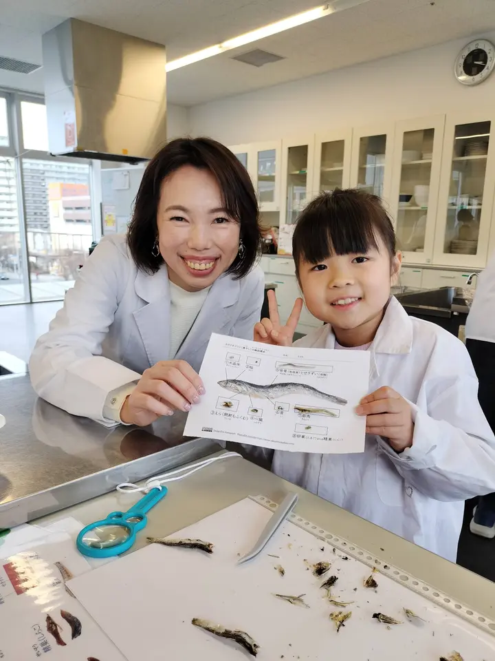
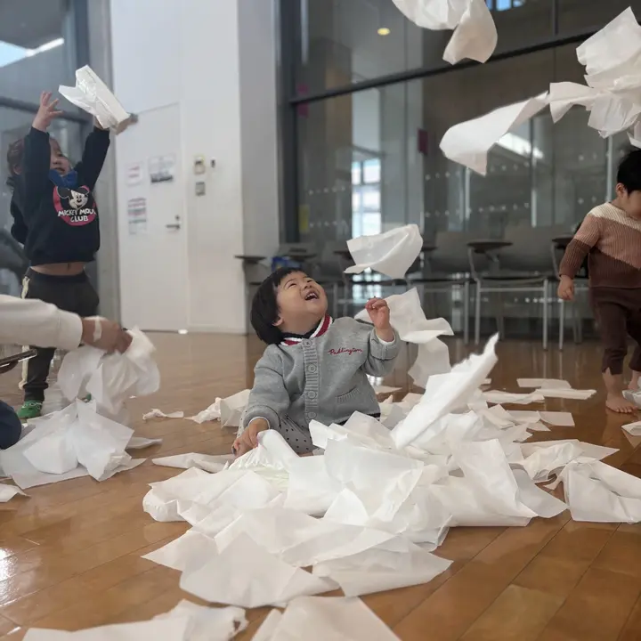
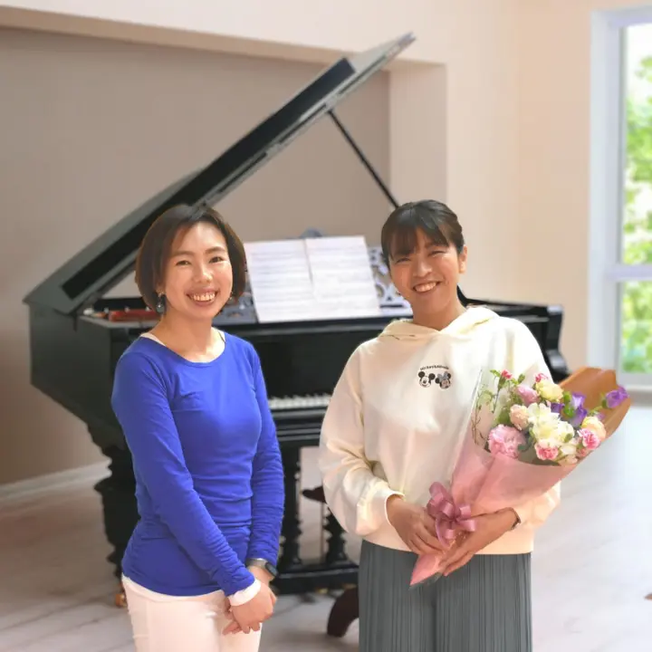
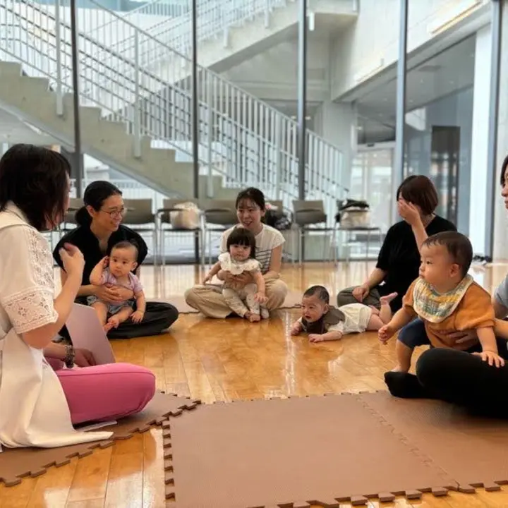

子育て・教育の中での活用
親子の活動や教室での経験を入り口に、AIの使い方を紹介する講座・サポートを行っています。
さいたま市
脳科学に基づく幼児教育Brain-based Early Education
Miwa Uchida
脳育・知育教室 SproutUp 代表
EnglishPlaypark♪ 英語担当
みらいLab サポーター
現場約30年、5,500組以上の親子と歩んできた教育者。
教室運営は、AIで動かしているエンジニア。
脳科学も、子育ても、コードも書きます。

01 プロフィール

0歳から小学生を対象とした脳育・知育教室 SproutUp の代表。五感を刺激する感覚遊びと知育アクティビティを両輪にした、少人数制のハイブリッド親子教室を、さいたま市内5拠点で主宰しています。
私立進学中高などで6年間の家庭科教員を務めたのち、幼児教育の道へ。栄養士としての離乳食・食育指導、調理科学の大学院修士で培った専門技術と視野、ブレインアナリストとしての脳科学に裏づけられた声がけを、一つのカリキュラムに束ねてきました。かつての教え子が、自分の子を連れて来る。その積み重ねが 現場約30年・5,500組以上 です。
02 よくある質問
03 教室紹介

五感を刺激する脳育あそびを、学びにつなげる。感覚遊び・製作・実験・調理科学を年齢に合わせて設計。小学生は「頭がよくなるお料理教室」。

プロの生演奏とグランドピアノで、本物の音に触れながら英語で遊ぶ親子クラス。公共施設利用でお月謝も抑えめ。0歳クラスはおねんね撮影会つき。

「好き」を見つける喜びと挑戦する勇気を育む次世代子育て支援センター。講座開催のほか、チラシ制作・予約管理を担当。
AIを活用したサポート
子育てや教育の現場で、AIをどのように役立てられるか。実際の教室運営での経験をもとに、AIの活用をサポートしています。
教室での活動と、予約やお知らせなど日々の運営。その両方に関わる立場から、身近な使い方を一緒に考えます。
親子の活動や教室での経験を入り口に、AIの使い方を紹介する講座・サポートを行っています。
予約・欠席連絡・カリキュラム管理・LINE配信など、日々の運営にAIや自作の仕組みを取り入れています。
SNSの発信やチラシ制作など、必要な情報を届けるための工夫も実践しています。